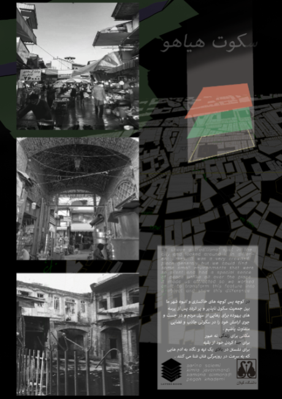
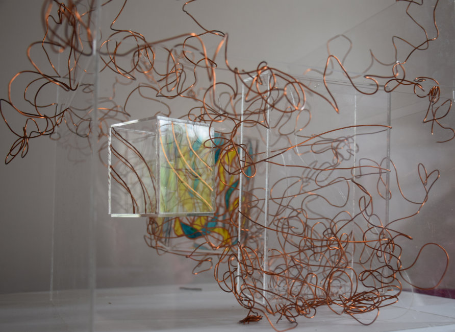

We had an accocietion called Layers room in university. we discussed architectural issues
and the sence of space in city.
We decided to show the sence of diffrent
places in city by a conceptual design. my group chose Rasht traditional bazaar.
▾


the name of the project
is "silence of tumult".
Rasht traditional
bazaar
is an organic form
architecture you can
not feel the end or
the beginging
its woven
in city so we chose a
trasnparent box to
modify it to show
this concept.
▾